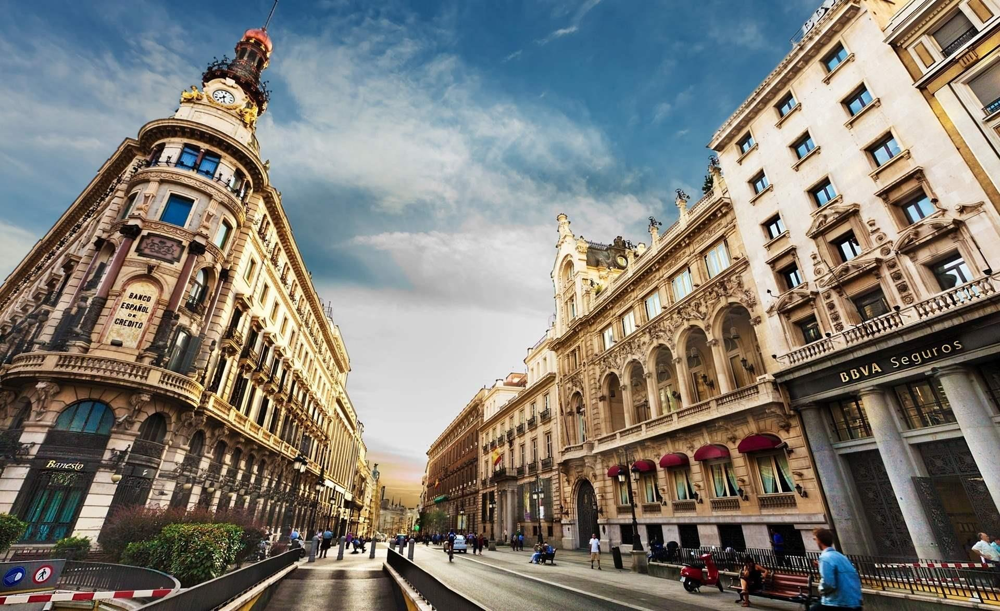
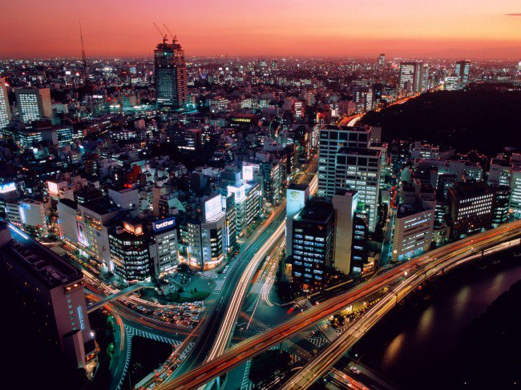
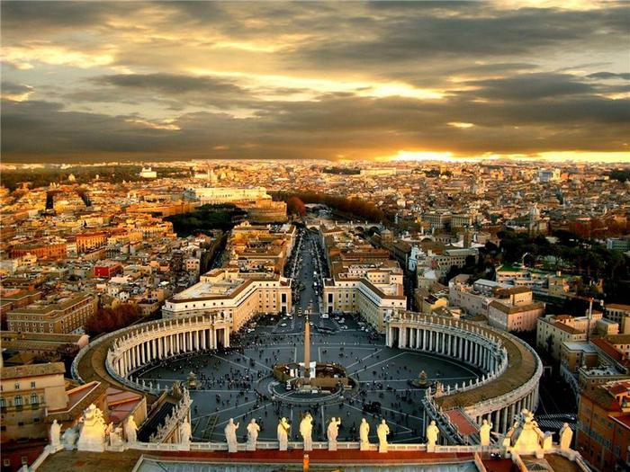
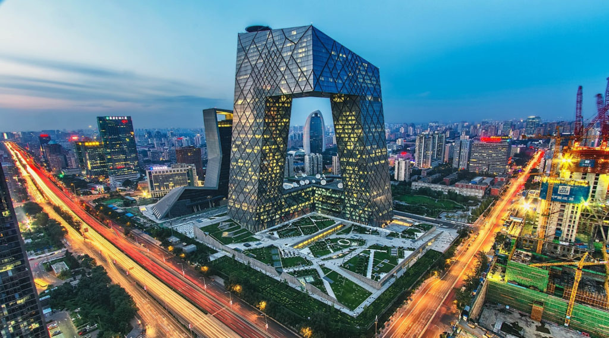

У Фігерасі знаходиться Музей-театр Сальвадора Далі.
Фламенко — народний іспанський пристрасний танець, який звуть також танцем закоханих.

Японія — провідна країна в галузі наукових досліджень, зокрема, технології, устаткування для машин і біомедичних досліджень.

Надзвичайно великий Внесок Італії до європейської та світової культурної спадщини.
На сьогодні у країні знаходиться найбільша у світі (сорок чотири) кількість пам'яток ЮНЕСКО.



China
Все про Китай коротко:
Китай – це третя за площею держава і лідер за кількістю населення – тут проживають 1,3 млрд. чоловік. У Піднебесній імперії (так називали китайці свою країну) були винайдені папір, порох, фарфор, зубна щітка, туалетний папір, сірники, парасоля. Китайці навчилися друкувати книги і прясти шовкові нитки. Перші газети теж з’явилися в Китаї.
Сьогодні важко знайти назву товару, який би не вироблявся в Китаї. Країна освоює нові ринки і галузі, скуповує відомі бренди, копіює і робить кінцевий продукт привабливішим і доступнішим.
Китай межує з такими країнами – Індія, Росія, В’єтнам, Афганістан і ряд інших. Конституція КНР, яку прийняли в 1982 році, говорить, що Китай – це соціалістична держава з демократичною диктатурою народу. Керує країною Комуністична Партія через Всекитайські однопалатні збори з народних представників.
Главою держави вважається генеральний секретар.

Столиця Китаю -Пекін.
Найбільші міста Китаю – Тяньцзін, Шанхай, Чунцін
Офіційна валюта Китаю – юань.
Клімат і рельєф Китаю Рельєф держави:
Lосить різноманітний: в західному регіоні країни знаходиться найвища гірська система в світі – Гімалаї.
Найвища вершина світу – гора Еверест (8848 м). На сході розташовується Велика Китайська Рівнина, яка простягається вздовж берегів Східно-Китайського і Жовтого морів на тисячу кілометрів. Між берегами – гірські системи різної висоти.
Клімат варіюється від континентального помірного на півночі до субтропічного клімату з задушливим, жарким літом. Зима слабо виражена в південній частині країни. Корисні копалини Китаю
Населення і релігія Китаю:
На території країни живуть 56 різних народів, які складають 7% від населення. Решта 93% – китайці. Близько 36% всього населення Китаю живуть в містах, а 64% – в сільських місцевостях.
Традиційними релігіями держави є даосизм, конфуціанство і буддизм. Християнство і іслам теж визнають, але не так широко. У деяких народів Китаю збереглися ще багатобожжя і язичництво.